We built three designs in which an improver revises its own procedure for modifying a humanoid robot's planner, and tested each against a fixed first-generation improver given the same memory. None produced a recursive handoff. Two adaptations held up on fresh worlds, and we measured why recursion stays below detection in this system.
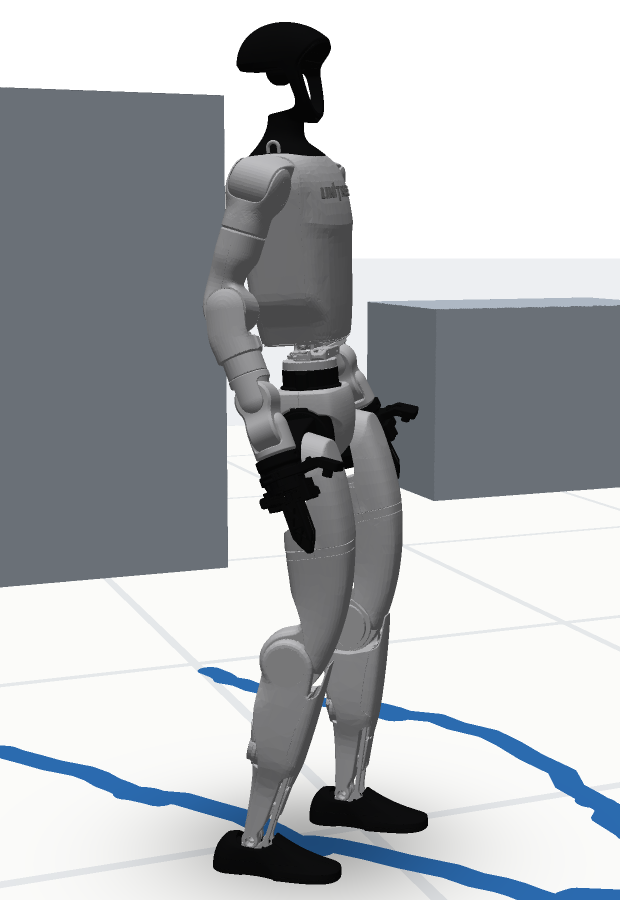
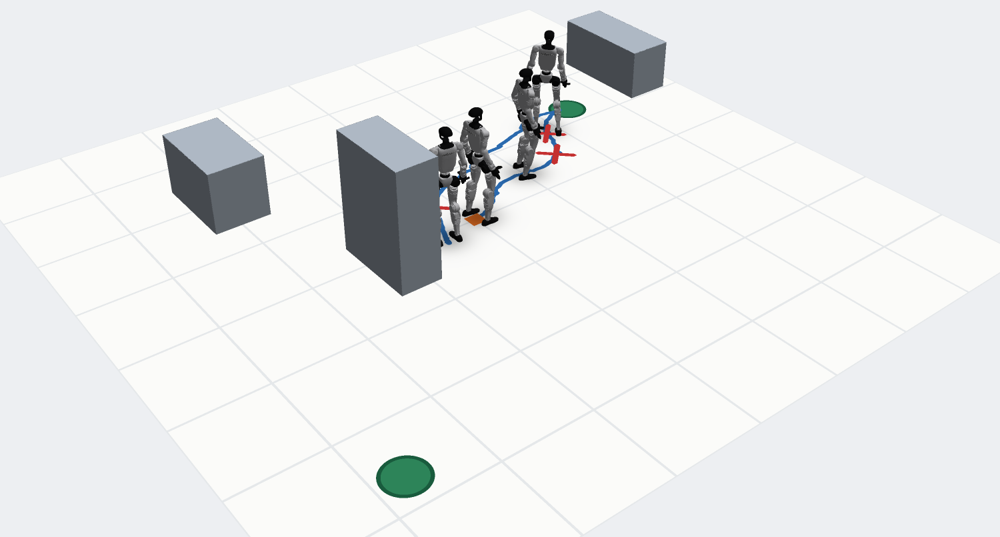
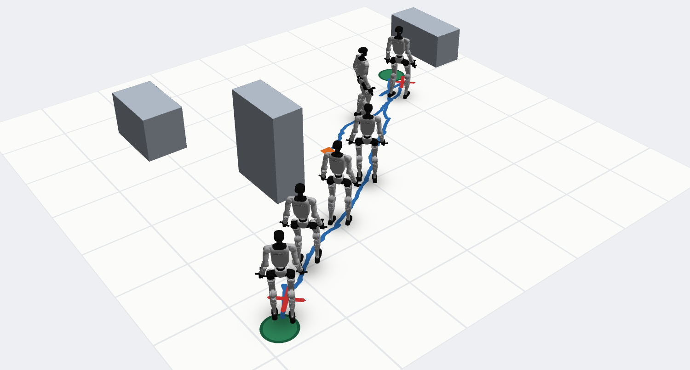
A system that gets better over time may be improving itself recursively, or only accumulating data, searching more, or being engineered. Comparing a later generation with the first one cannot tell these apart.
We define a recursive handoff strictly. An improver Ig turns logged experience into a modification of the planner, and also produces its successor Ig+1. The handoff counts only if the planner built by Ig+1 beats, on fresh worlds and at the same budget:
The objective, fixed before any experiment, required at least two such handoffs. Adaptation and engineering gains were never to be relabeled as recursive improvement.
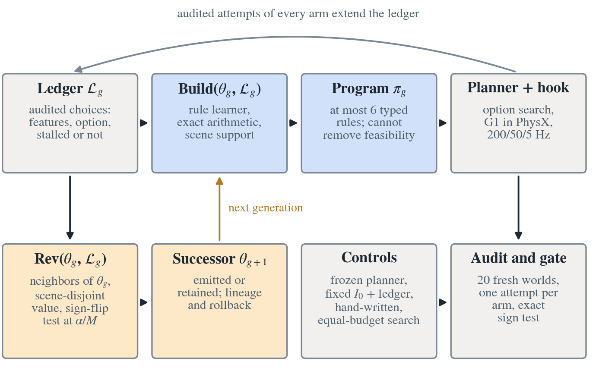
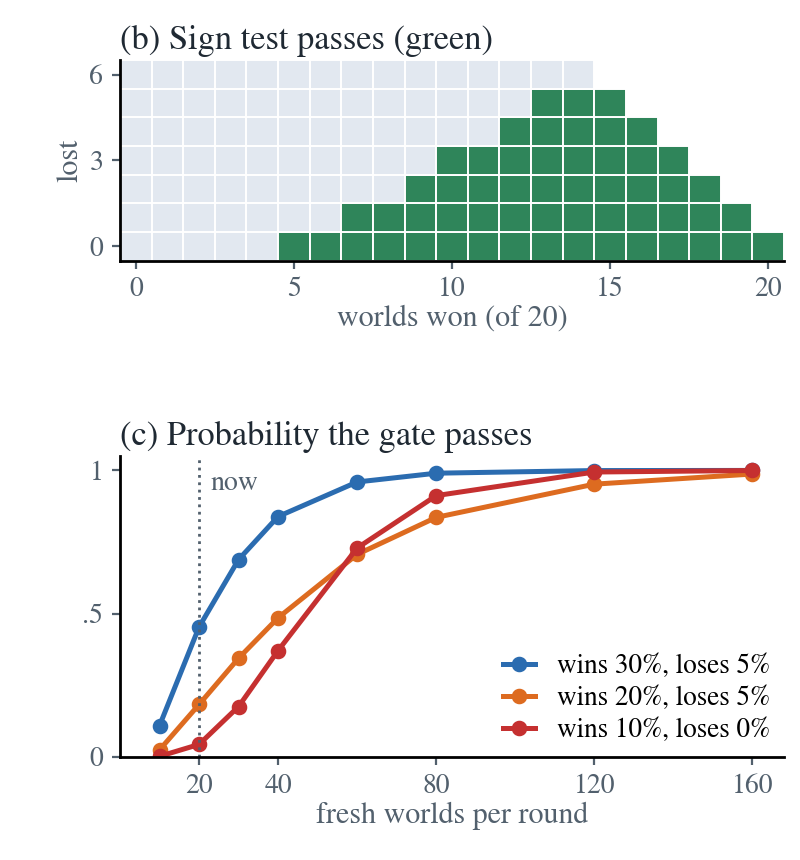
| Design | What a generation changes | Physics | Adaptation found | Handoffs |
|---|---|---|---|---|
| M3 configuration ordering | a rule ordering six planner configurations | 72 attempts, 2 rounds of 6 worlds | none: the child tied every control | 0 of 2 |
| v4 feedback rules | the configuration of a rule learner over a ledger of logged choices | 123 cohort attempts | hand rules: 13 → 16 of 20 fresh worlds; learned rules: 8 and 10 | 0 no child emitted |
| v5 action vocabulary | which new motion options to calibrate and keep | 28 calibration runs, 24 validation attempts | two long options: 8 vs 5 of 12 fresh worlds (p = 0.19) | 0 gated out offline |
In 120 logged attempts, 37 % of selections stalled. Two 0.5 s options stalled 98–99 % of the time, and repeating a stalled option stalled again in 385 of 388 cases. Ordering whole configurations, which M3 revised, had no headroom: the best single configuration passes 15 of 20 worlds and a per-world oracle 17.
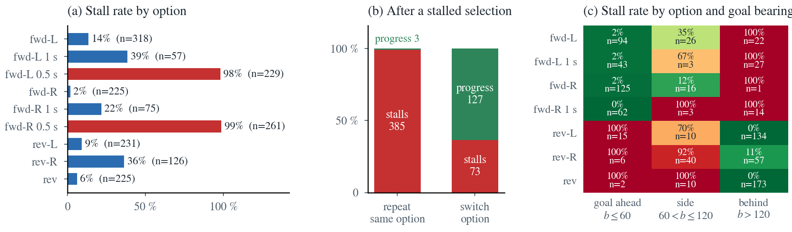
Two rules written by hand (drop the dead options; after a stall, do not repeat) pass 16 of 20 fresh worlds against 13 for the frozen planner. Rules learned from the ledger pass 8 and 10: the ledger measures straight-line progress, so the detours a route needs look like stalls and get forbidden.
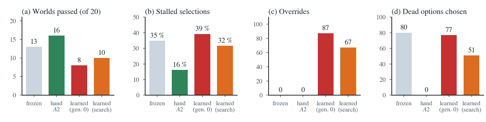
v5 judges candidates in closed loop with an evaluator that replays the real controller against 2,428 measured physics executions (Brier score 0.154, against 0.25 for the nominal model). Long motion options, calibrated in physics, raise ordered-task success in the evaluator from 0.51 to 0.73. On 12 fresh worlds in physics the calibrated library passed 8 against 5; the predictions written beforehand were 8.19 and 5.25. At this sample size the difference is consistent with the prediction, not proof of it (p = 0.19).
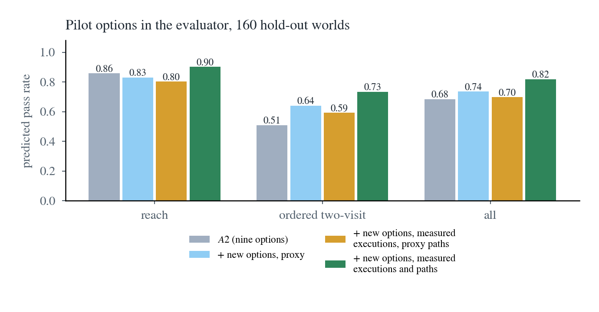
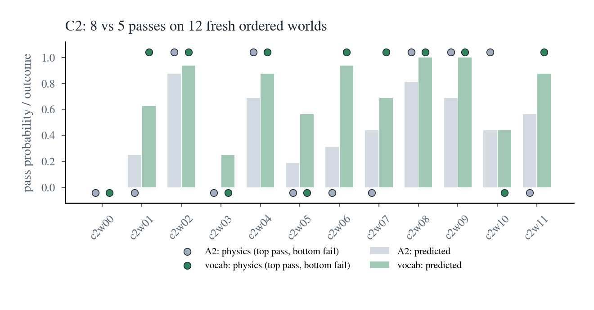
Starting from the calibrated library, each generation swaps in the best of about 45 candidate options. On hold-out worlds the first swap is worth +0.167; the second and third +0.017 and +0.006. Relaxing the planner's budget lowers the first gain and leaves later ones worth a few points.
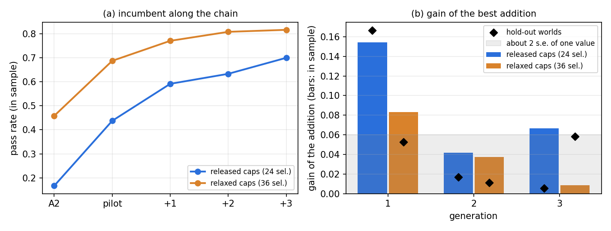
A handoff is a difference between two improvers that see the same memory, so it can only come from what a revised procedure proposes differently. After v5 we derived four conditions a design would have to meet offline before physics is worth running: an interacting modification space, a binding budget, headroom that renews while remembered solutions transfer poorly, and a procedure effect of at least 0.1 in pass rate. These conditions are post hoc, not a preregistration.
Forty random option libraries were evaluated across friction 0.3, 0.6 and 1.2, 1 to 12 obstacles, and planner budgets of 18, 24 and 36 selections. Rankings agree about as well as identical regimes would. Re-screening the two or three best remembered libraries recovers each regime's best to within 0.017. Proxies for a 5° slope, drifting obstacles and a different body give the same answer.
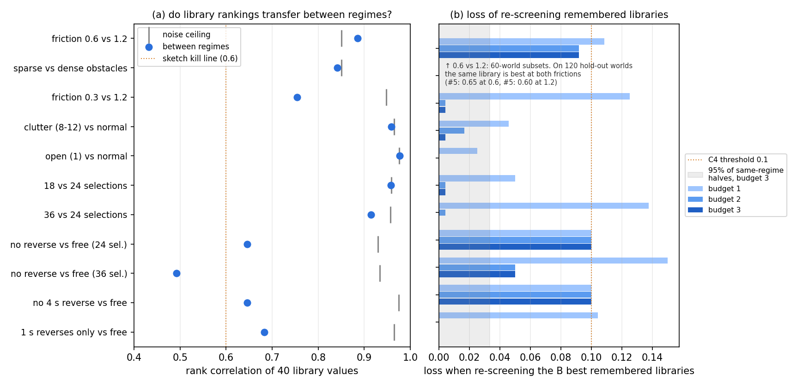
Only constraint regimes, which make some options unusable, reorder the libraries. In the strongest case a procedure that uses the constraint beats memory by 0.09 on hold-out worlds, close to the 0.1 threshold. A hand-written ranking rule gains 0.089; learning adds 0.003 on top of it. With the constraint hidden, a simple hand-written heuristic beats all four learned designs we tried.
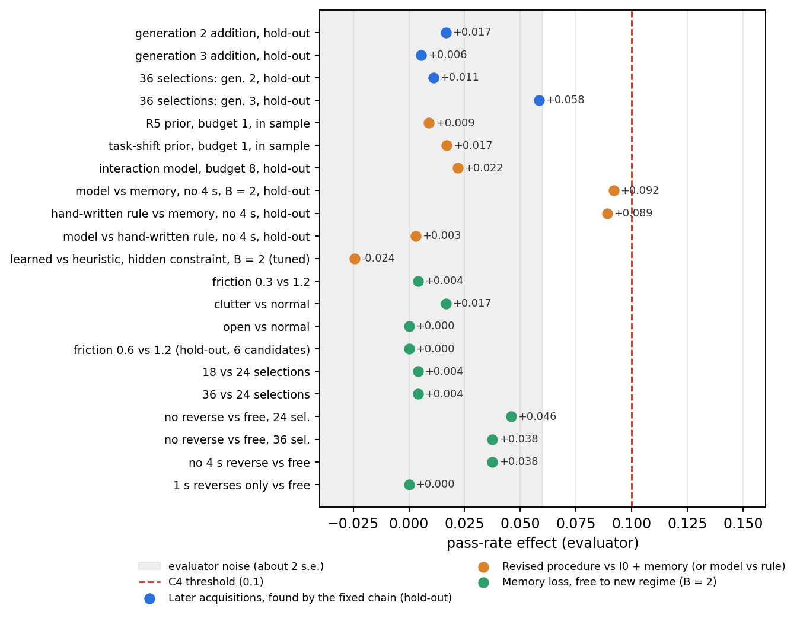
In one sentence: every gain we found was either a one-off acquisition that a fixed procedure finds, or reachable by engineering.
The blind locomotion policy walks up to a 5° incline without falling, travels 19–35 % farther uphill, and falls walking up 10°. An offline proxy showed that a slope regime would not break memory either, so its calibration was not run.
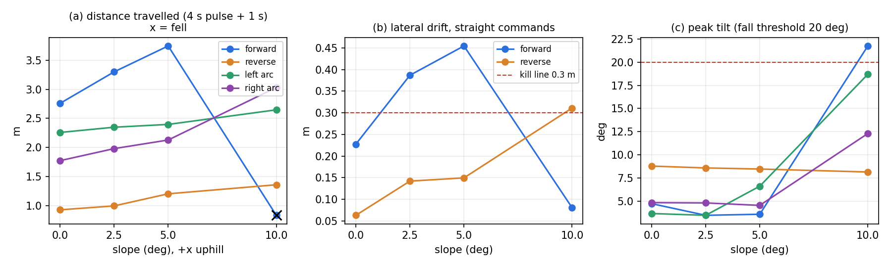
A survey of 2024–2026 papers found that robot "self-improvement" almost always means a fixed improver repeatedly modifying an artifact: policy weights, reward code, policy code, skill libraries, imagined data, curricula or simulation parameters. The one verified robot case where the improver rewrites itself (Hyperagents, simulated quadruped reward design) beats a frozen improver with the same archive, but not the hand-tailored baseline. The best-controlled software study reports a null result on whether the self-improved agent is a better improver.
Our negative result matches that pattern. Two of our controls are rare in this literature: a hand-written arm at every comparison, and tests of whether remembered solutions transfer across regimes.
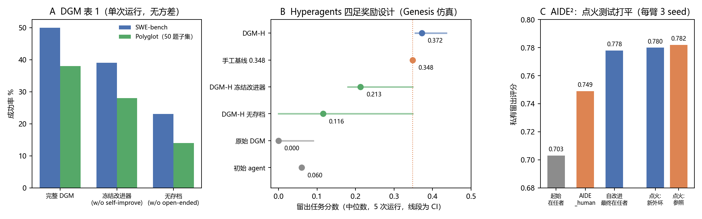
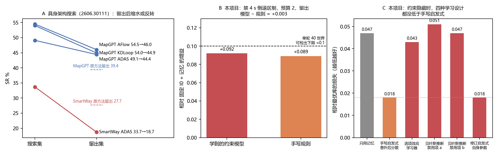
Literature numbers are self-reported by the cited papers; some sources were read only as abstracts. We found no independent replications.
Recursion has been measured only where the modification space is open-ended code, the improver is a language model, and runs last 80–100 iterations. Our space, a choice of nine motion options, saturated after one step.
The next design keeps the evaluator and every control, and changes one thing: an LLM coding agent rewrites the planner's selection policy as code. There is headroom for it: the best fixed library passes 0.57 of three-visit worlds, while picking the best library per world would pass 0.78. The design fixes its conditions and kill criteria before any run, and treats physics as a validity check, since the handoff claim would be an evaluator-level claim.
The most likely outcome is still that the hand-written arm ties. That would be a stronger negative result than this one, because that system could have shown recursion.
The report rebuilds from stored results with one command. It runs no physics and no evaluator rollouts, redraws the figures, rebuilds the PDF, and checks 16 numbers quoted in the text against the data.
python -B tmp/pdfs/final_20261112/reproduce.py| What | Where |
|---|---|
| Final report | final-report.pdf |
| Summary of the result | docs/research/2026-11-12-rsi-route-final.md |
| Every regime test | docs/superpowers/specs/2026-11-12-v6-sketch.md |
| Evaluator and analysis scripts | tmp/robot_checks/v5_*.py, v6_*.py |
| Result data | output/robot_rsi/v5_calibration/*.json |
| Next design (draft) | docs/superpowers/specs/2026-11-24-v6-llm-planner-code-design-draft.md |